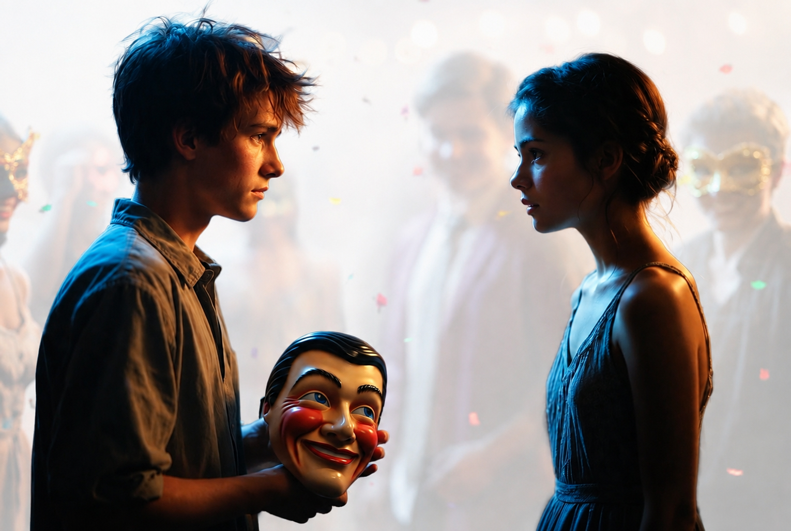

READ · THE MASK PARTY
Everyone at Oakwood High loved the Mask Party. The rule was simple: wear a real mask and act like a different person.
Liam was happy about it. He was usually quiet and shy. Tonight, his mask was «Funny Liam». He laughed loudly and told jokes.
He saw Mia. She was usually very kind and her smile was real. Tonight, she was quiet. Liam, as «Funny Liam», walked to her.
«Why so serious?» he asked with a big smile.
Mia looked at him. «I’m just tired, Liam,» she said softly. «Tired of pretending. So tonight I decided to be just me. And I think… you are tired too.»
Liam stopped smiling. Her words were true. He felt very tired. He didn’t want to joke anymore.
He slowly took off his mask. His face was calm and a little sad. He just stood there — his real, quiet self.
Mia smiled. It was a warm, real smile. «Hi, Liam,» she said. «Nice to meet the real you.»
That night, they didn’t dance or tell secrets. They just talked quietly, without masks. It was the beginning of a real friendship.

GLOSSARY
| Word / phrase | American pronunciation | Russian |
|---|---|---|
| mask | [mæsk] | маска |
| rule | [ruːl] | правило |
| to wear | [wer] | носить, надевать |
| to act | [ækt] | вести себя, притворяться |
| different | [ˈdɪfrənt] | другой |
| quiet | [ˈkwaɪət] | тихий, спокойный |
| shy | [ʃaɪ] | застенчивый |
| loudly | [ˈlaʊdli] | громко |
| joke | [dʒoʊk] | шутка |
| kind | [kaɪnd] | добрый |
| real | [riːl] | настоящий |
| serious | [ˈsɪriəs] | серьёзный |
| tired | [ˈtaɪərd] | уставший |
| to pretend | [prɪˈtend] | притворяться |
| to decide | [dɪˈsaɪd] | решать |
| true | [truː] | правдивый, верный |
| to take off | [teɪk ɔːf] | снимать (маску, одежду) |
| calm | [kɑːm] | спокойный |
| sad | [sæd] | грустный |
| warm | [wɔːrm] | тёплый |
| without | [wɪˈðaʊt] | без |
| beginning | [bɪˈɡɪnɪŋ] | начало |
| friendship | [ˈfrendʃɪp] | дружба |